如今NLP和CV领域的大部分任务都将Transformer作为基础模型。而早在2019年12月，字节跳动曾经开源过一款Transformer类模型推理加速引擎——LightSeq。作为业界第一款支持多种模型和解码方法的推理加速引擎，LightSeq的推理速度快于其它同类软件，更是远远超过了TensorFlow和PyTorch。
最近，LightSeq发布了最新版本，引入了引擎方面的重大更新——支持了Transformer全流程训练加速，在不同的批处理大小下相比主流训练库最高可加速3倍多！至此从训练到推理部署的整个过程都已被LightSeq打通。
那么它到底采用了哪些技术呢？下面笔者根据LightSeq公布的资料为你逐个揭晓。
背景介绍
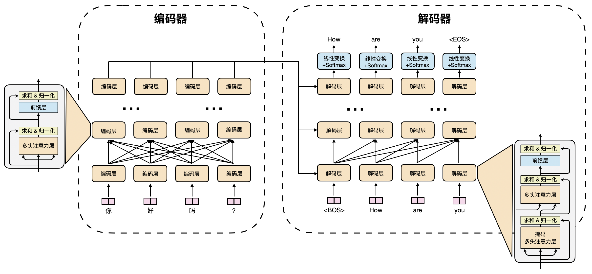
Transformer模型 [1]自从2017年被谷歌提出之后，成为了众多NLP任务以及部分CV任务的主流模型，尤其是机器翻译、文本生成、文本摘要、时间序列预测等任务。图1是机器翻译任务使用Transformer进行训练的一个例子。但由于硬件资源的匮乏，很多高校实验室或者公司都无法训练很大的模型，而降低批处理大小等措施又会导致训练时间成倍增加。因此如何利用有限的资源最快训练出模型成为了亟待解决的问题。
针对这一痛点，字节跳动推出了LightSeq训练加速引擎，对Transformer训练的整个计算过程进行了优化。从词嵌入层、编码层、解码层，到最后的损失函数层，从前向传播、反向传播、梯度同步，到最后的参数更新，LightSeq都进行了细致的性能分析和优化。以机器翻译任务为例，仅需要修改几行代码开启LightSeq训练加速，就可以加速最多3倍以上。
总的来说，LightSeq具有如下几个优点：
- 支持Transformer的完整加速。
LightSeq是业界第一款完整支持整个Transformer模型加速的训练引擎，包括了词嵌入层、编码层、解码层、损失函数层等高效自定义层。相比之下，另一款知名的深度学习优化引擎DeepSpeed [2]仅支持编码层的加速，因此只能用在BERT等模型上，局限性较大。 - 训练速度快。
LightSeq训练速度非常快。例如在WMT14 [3]英德机器翻译任务上，利用英伟达最新的训练显卡A100，相比于主流序列生成库，LightSeq最快仅需要三分之一的训练时间。 - 功能全面，简单易用。
LightSeq提供了高效的TensorFlow和PyTorch自定义层供用户灵活使用，可以自由插入到Hugging Face等主流训练库中。除此之外，还和当前流行的训练库如Fairseq [4]、NeurST [5]等做了深度集成，用户在安装LightSeq后，只需要修改几个命令行参数，就能在这些训练库上使用LightSeq。 - 提供丰富的二次开发工具。
LightSeq提供了完整的CUDA kernel和Transformer自定义层的单元测试功能，可以测试自定义算子的正确性，同时分析出运行时间和加速比，帮助开发者更快地验证功能的正确性和有效性。
表1列举了不同训练加速引擎之间支持的功能对比：
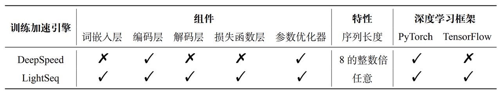
快速上手
LightSeq提供了多种便捷的运行方式，点击文末链接可以快速体验。这里简单讲解一下快速接入LightSeq进行训练的两种方式。
使用自定义层
LightSeq提供了许多自定义层供用户灵活使用。
例如想要将Transformer模型中的编码层替换为LightSeq的编码层，只需要提供一个编码层参数，用来初始化LightSeq编码层。然后就可以用它来替换原始的编码层，加速模型训练。详细代码如下（这里省略了部分配置参数）：
from lightseq.training.ops.pytorch.transformer_encoder_layer import LSTransformerEncoderLayer
config = LSTransformerEncoderLayer.get_config(
max_batch_tokens=4096,
max_seq_len=256,
...
)
enc_layer = LSTransformerEncoderLayer(config)一键启动
LightSeq还和几个当前流行的训练库（例如Fairseq和NeurST）做了深度集成，仅需修改很少的代码就能开启LightSeq加速。
Fairseq
LightSeq为Fairseq提供了一套完整便捷的Transformer训练样例。
首先需要安装Fairseq，以及必要的第三方库。
然后用如下命令安装LightSeq加速库：
pip install lightseq接着就可以通过LightSeq提供的启动器，灵活地指定使用LightSeq优化版本的Transformer模型、参数优化器和损失函数，下面是启动参数样例（这里省略了和LightSeq无关的参数）：
lightseq-train DATA_PATH \
--arch ls_transformer_wmt_en_de_big_t2t \
--optimizer ls_adam \
--criterion ls_label_smoothed_cross_entropyNeurST
NeurST是一款同时支持TensorFlow和PyTorch的开源序列生成库，可以用来做文本生成、机器翻译和语音翻译。LightSeq已经与其进行了深度融合，无需用户修改代码和启动参数即可直接进行加速训练。
首先需要安装NeurST，官方提供了详细的安装教程 [6]。
然后安装TensorFlow版本的LightSeq，命令如下：
pip install http://sf3-ttcdn-tos.pstatp.com/obj/nlp-opensource/lightseq/tensorflow/lightseq_tf-2.0.1-cp37-cp37m-linux_x86_64.whl这样NeurST就会自动识别LightSeq已经安装成功，调用lightseq库进行模型构建来加速训练，无需修改启动参数。运行命令详见NeurST提供的机器翻译样例 [6]。
性能测试
在WMT14标准的英德翻译任务上，LightSeq做了评测实验。以当前流行的Fairseq训练库（基于PyTorch）和被广泛使用Apex工具库 [7]为基准，测试了LightSeq的训练性能。实验在NVIDIA Tesla V100 和 NVIDIA Ampere A100上进行，采用单机八卡数据并行训练和16位浮点数混合精度。
在不同模型大小和批处理大小下，LightSeq对单步训练速度的提升结果如图2所示：
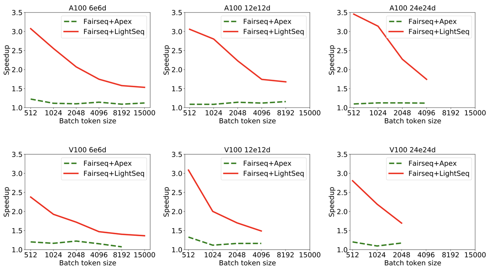
这里所有模型的词表大小为40k，编码层和解码层隐层维度是1024，注意力头数为16。e和d分别表示编码器和解码器的层数。加速比的计算采用了每秒训练有效单词数（real word per second）这一常见指标。
可以发现：
- 使用了LightSeq后，单步训练速度有45%-250%的提升，作为对比，Apex仅有5%-30%的提升。LightSeq能取得这种大幅度的性能提升，源自于其对模型进行了全流程的细致优化。
- Apex显存使用量对比原生Fairseq略有提升，例如V100上，Apex导致6e6d的模型在15000批处理大小上出现了显存溢出，而LightSeq仍然可以正常训练。这证明了LightSeq在保证高效计算的同时，也做到了高效使用显存，这个特征在显存有限或者训练大模型时非常关键。
- 随着批处理大小的增加，LightSeq加速比逐渐降低。其原因是，经过LightSeq优化后，单步训练中矩阵乘法占比提高，显卡的计算吞吐成为训练速度的瓶颈。这表明LightSeq已经对计算资源做到了充分利用。也解释了为什么计算吞吐更高的A100，平均会取得比V100高15%左右的加速比。
最后在WMT14英德翻译数据集上测试了图1中Transformer模型训练至收敛的时间，结果如图3所示：
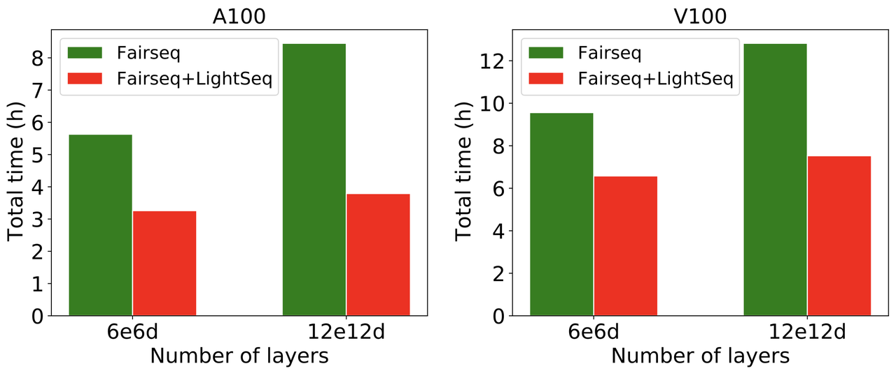
由于LightSeq的计算优化是无损的，不会影响模型训练至收敛的训练步数，所以收敛时间的提升和单步训练时间的提升趋于一致。观察可以发现，LightSeq最多可将模型训练时间由8.5小时降低到3.8小时。
可视化分析
为了更清楚地展示LightSeq优化前后模型的运算情况，用Nsight Systems [8]可视化模型训练过程中单步的算子调用情况。
首先是Fairseq+Apex的可视化，结果如图4所示。总耗时在288ms左右，三个红色框分别表示前向传播、反向传播、梯度同步与参数更新。可以看出前向传播的算子排列比较稀疏，存在很大的优化空间。
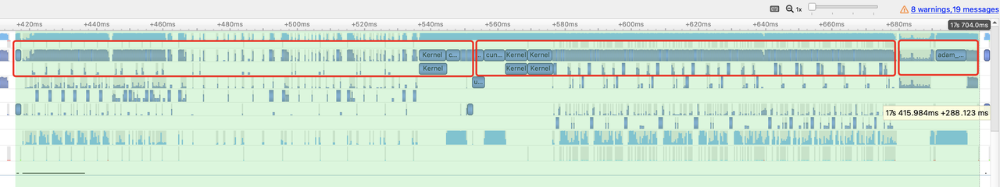
然后是Fairseq+LightSeq的可视化，结果如图5所示，总耗时降到了185ms左右。而且LightSeq的算子排列更加紧密，大大增加了显卡的利用率。
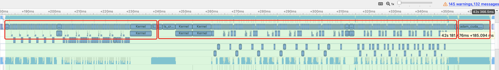
CUDA kernel性能
此外还测试了LightSeq单卡情况下所有CUDA kernel的性能，对比了PyTorch、TensorFlow（XLA编译优化）、DeepSpeed和LightSeq四种实现方式。由于kernel太多，这里只列举了部分实验结果。
首先对比了最常用的dropout，图6是V100显卡上16位和32位浮点数dropout不同实现的加速对比结果：
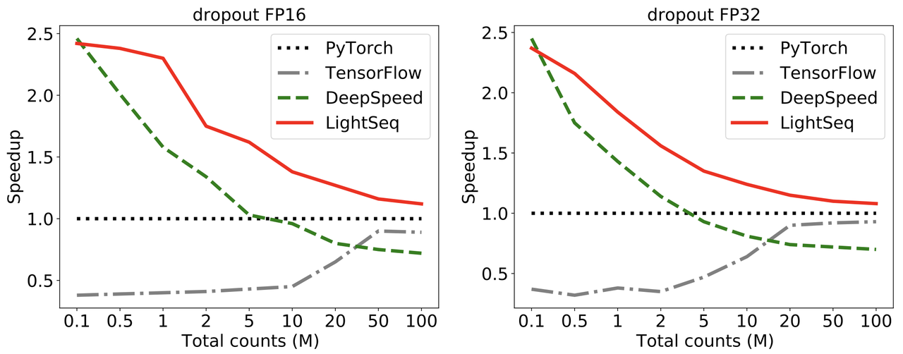
从图6中可以看出，LightSeq的实现要远远快于PyTorch和DeepSpeed。DeepSpeed在元素数量过百万之后逐渐不如PyTorch，而LightSeq始终比PyTorch快。随着元素数量的增加，LightSeq和DeepSpeed的速度都会有明显下降。TensorFlow在开启了XLA之后速度依然落后于PyTorch，且随着元素数量的增加差距逐渐缩小。
然后对比了注意力机制中的softmax函数，测试了实际训练场景中批处理大小为8192情况下的加速比。图7是V100显卡上16位和32位浮点数softmax不同实现的加速对比结果，因为DeepSpeed只支持句子长度为8的整数倍，所以这里只测试了长度为32的整数倍的句子计算速度：
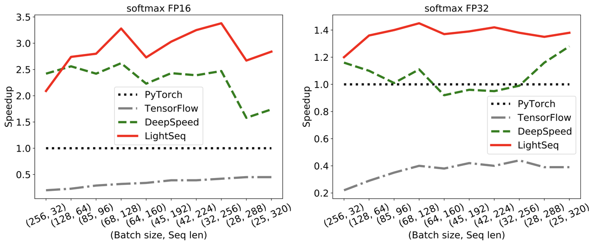
可以看出，LightSeq几乎在所有情况下远远快于DeepSpeed。且随着序列长度增加，LightSeq加速比逐渐增大。而DeepSpeed在16位浮点数情况下加速比会逐渐减小，在32位浮点数情况下甚至会出现比PyTorch还要慢的情况。TensorFlow即便使用XLA融合算子，运算速度也远远落后于其它三种实现。
在其它多数kernel测试中，LightSeq都要快于其它三种实现。
关键技术
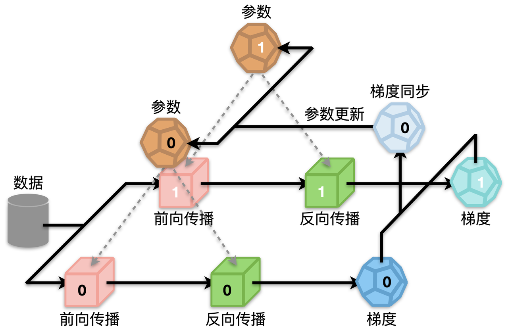
如图8所示，以2卡为例，一个完整的Transformer模型训练过程主要包括四个步骤：前向传播、后向传播、梯度同步和参数更新。其中前向传播和后向传播占模型训练总时间的70%多，包含了众多计算密集型和I/O密集型操作，因此是优化的重点。而梯度同步虽然耗时相对较少，但是也可以通过和反向传播并行化等方法隐藏掉大部分延时。最后优化器更新参数方面也大有文章可做，可以从计算和I/O两个方面减小延时。
下面详细介绍优化这四个步骤的几种技术：算子多运算融合、输入输出层融合、动态显存复用和参数连续化，最后介绍一下LightSeq提供的单元测试功能。
算子多运算融合
在大多数深度学习框架（例如TensorFlow和PyTorch）中，一个简单的运算通常都需要很多细粒度的核函数来实现。例如在TensorFlow中，一次层归一化（Layer Normalization）操作需要调用三次核函数以及两次中间显存读写，非常耗时。而基于CUDA，LightSeq定制化了一个层归一化专用的核函数，将两次中间结果的写入寄存器。从而实现一次核函数调用，同时没有中间结果显存读写，因此大大节省了计算开销。
基于这个思路，LightSeq利用CUDA矩阵运算库cuBLAS [9]提供的矩阵乘法和自定义核函数实现了Transformer的编码器和解码器。以编码层为例，具体结构如图9所示：
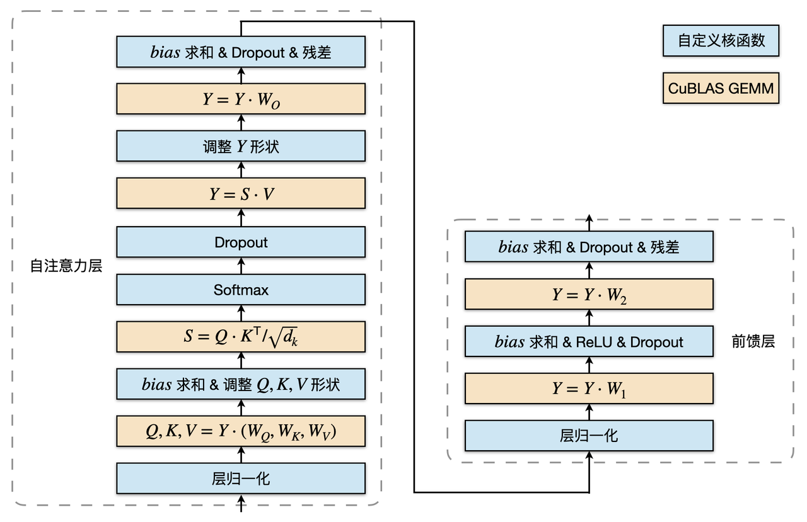
蓝色部分是自定义核函数，黄色部分是矩阵乘法。可以发现，矩阵乘法之间的运算全部都用一个定制化核函数实现了，因此大大减少了核函数调用和显存读写，最终提升了运算速度。
LightSeq还优化了核函数的实现，采用float4数据类型来进行数据读写，大大增加了数据的吞吐量，减小了核函数执行的延时。LightSeq支持任意长度的序列输入，根据不同的序列长度选择最合适的核函数来调用执行。相比之下，DeepSpeed多数核函数只支持句子长度为8的整数倍，因此速度较慢，局限性较大。
输入输出层融合
此外LightSeq还实现了词嵌入层和损失函数层的算子融合。对于词嵌入层，LightSeq将词表查找与放缩、位置向量融合以及dropout操作都写成了一个核函数。对于损失函数层，将交叉熵损失融合成一个核函数。通过输入输出层的融合，进一步减小了模型训练的时间，增加了显卡利用率。
以词嵌入层为例，图10展示了输入句子中单词id之后，词嵌入层进行的计算过程：
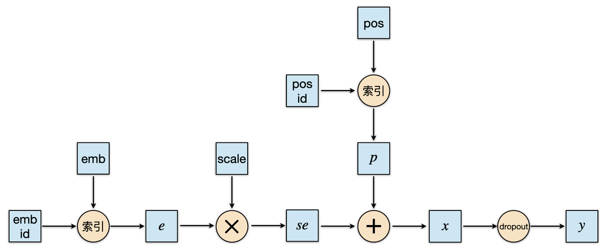
可以看出，在融合之前一个词嵌入层需要经过词向量查找与放缩、位置向量查找、两者相加、dropout五种运算，因此需要频繁调用核函数，非常耗时。而将这五个操作融合成一个核函数可以大大加快获取最终词表示的速度。
动态显存复用
为了避免计算过程中的显存申请释放并节省显存占用，LightSeq首先对模型中所有动态的矩阵大小都定义了最大值（例如最大序列长度）。接着在模型初始化的时候，为计算过程中的每个中间计算结果按最大值分配显存，并对没有依赖的中间结果共用显存。
参数连续化
LightSeq将Transformer每一层中所有的参数都绑定在一起，做连续化处理。初始化模型某一层的时候只需要定义一个参数，参数量为原始模型该层总的参数量。在后续计算时，只需要从这个参数的对应位置处取出原始参数值即可。
以编码层为例，自注意力层和前馈层共有16个参数，假设总参数量为S。于是可以定义一个大小为S的参数，按照原始各个参数的参数量来划分出16个块，连续存储16个参数，在计算时只需要取出对应的参数块即可。
参数连续化能显著降低参数更新期间拷贝、同步、计算的次数。实验分析发现，进行了这项优化后，优化器性能提升了40%-50%。
开发工具
LightSeq提供了丰富的单元测试功能，不仅可以测试所有的自定义核函数和自定义层的正确性，还可以对比测试不同实现之间的速度。用户可以自由指定测试的组数、每组重复运行次数、容差和数据类型。
具体步骤上，首先用户需要构造随机数据，然后根据数据类型选择不同的CUDA核函数，最后分别实现自定义和基准的计算函数即可。这样就保证了用户可以基于自身场景进行更进一步的二次定制开发。
总结
LightSeq新版训练加速引擎全方面提升了Transformer模型的训练速度，打通了训练和推理部署全流程，使用灵活方便。大大缩减了科研工作者们训练模型的成本。可以期待未来像机器翻译、文本生成、摘要、对话生成、情感分析等大量NLP应用场景可以使用LightSeq来训练和推理。
传送门
LightSeq地址：
https://github.com/bytedance/lightseq
参考文献
[1] Transformer: “Attention is all you need”, NIPS (2017)
[2] DeepSpeed: https://github.com/microsoft/DeepSpeed
[3] WMT14: http://www.statmt.org/wmt14/
[4] Fairseq: https://github.com/pytorch/fairseq
[5] NeurST: https://github.com/bytedance/neurst/tree/lightseq
[6] NeurST机器翻译样例: https://github.com/bytedance/neurst/tree/lightseq/examples/translation
[7] Apex: https://github.com/NVIDIA/apex
[8] Nsight Systems: https://developer.nvidia.com/nsight-systems
[9] cuBLAS: https://docs.nvidia.com/cuda/cublas/index.html